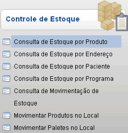
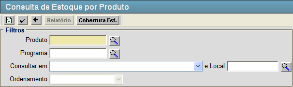
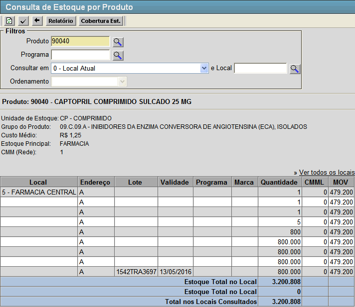
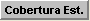

Consulta de Estoque por Produto [ Voltar ]Esta tela permite o usuário consultar a quantidade
existente em estoque de um determinado produto. Para acessá-la clique no link "Consulta de Estoque por Produto" dentro do menu "Estoque - Controle de Estoque".  O sistema abrirá a seguinte tela:  Para verificar a situação de um determinado produto dentro do estoque, siga os passos a seguir: 1º Passo: preencha o formulário de busca com os dados do produto em questão. Lembre-se que os campos amarelos são de preenchimento obrigatório.
2º Passo: após preencher os filtros desejados clique no botão  para gerar a consulta. Os resultados irão aparecer na tela conforme imagem abaixo. para gerar a consulta. Os resultados irão aparecer na tela conforme imagem abaixo. 3º Passo (Opcional): clique no botão [Cobertura Est.]. Este botão abrirá o relatório "COBERTURA DE ESTOQUE", que informa por um período de tempo determinado se os produtos irão suprir as demandas baseado no consumo médio dos mesmos. 4º Passo (Opcional): clique no botão  [Relatório].
Este botão abrirá o relatório "CONSULTA DE ESTOQUE POR PRODUTO", que contém os resultados da pesquisa. [Relatório].
Este botão abrirá o relatório "CONSULTA DE ESTOQUE POR PRODUTO", que contém os resultados da pesquisa. |